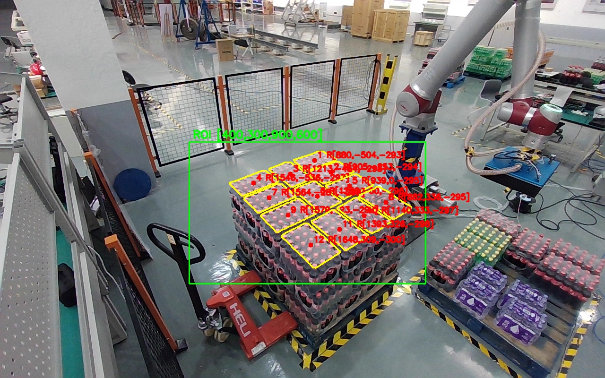
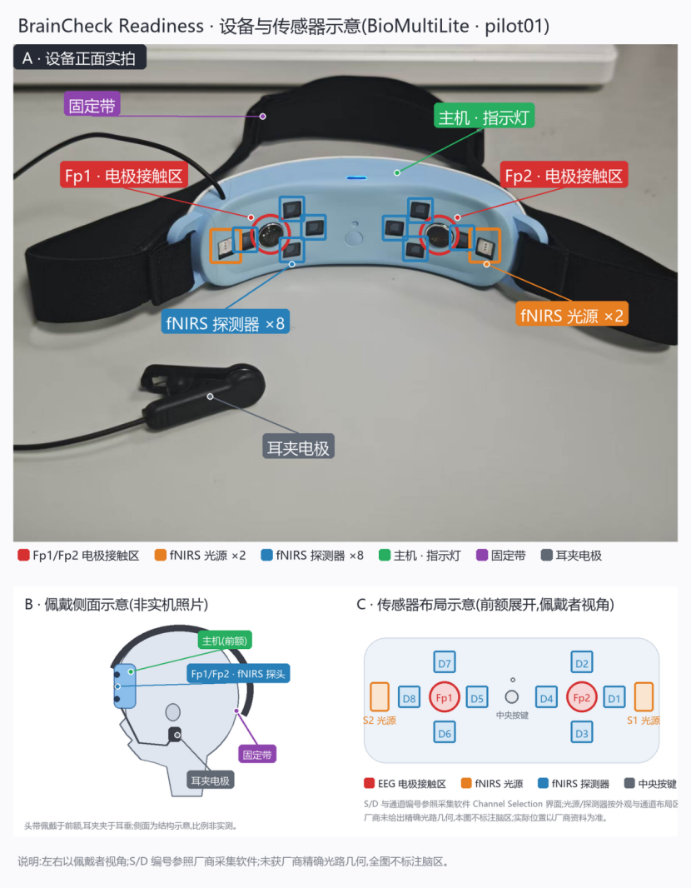
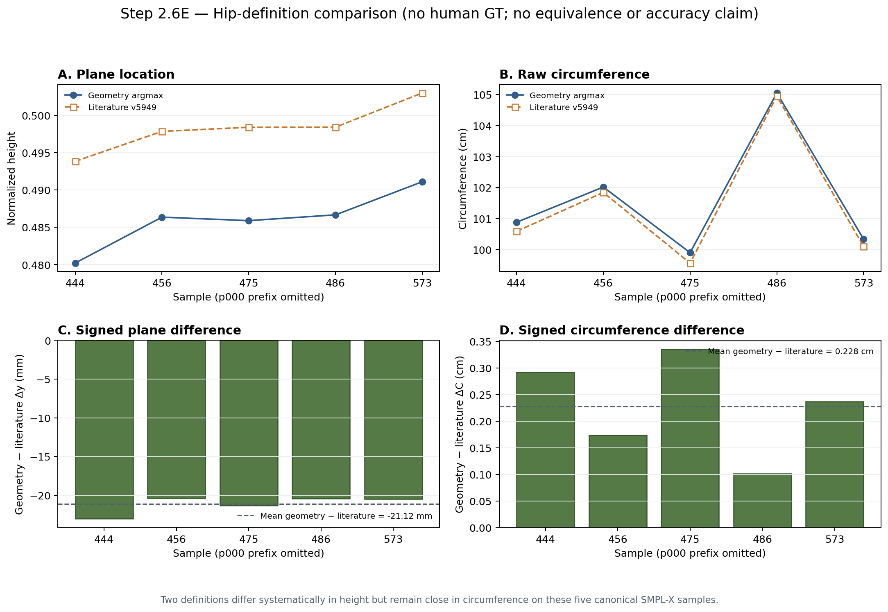

CV · 01Project media
Computer Vision · Edge AI
Computer vision & embodied AI engineer
I build deployable perception systems across computer vision, embodied intelligence, and BCI—from lightweight models and edge inference to ROS 2 integration and robot action.
Research communication

Project index
This is the project structure first. Each card will be completed with your role, technical path, evidence, images, video, code, and links as materials are confirmed.
Computer Vision · Edge AI
Computer Vision · Cultural Heritage
3D Vision · Anthropometry
Industrial Vision · Robotics
Sonar · Signal Processing
EEG / fNIRS · Fatigue
BCI · Real-time Control
Quadruped · Perception
XR · Teleoperation
Manipulation · ROS 2
MindSpore · Edge Robotics
Robot Learning · ACT
Knowledge Q&A · Edge–Cloud
Recent highlights
Featured publication · IEEE SMC 2025
Designed for dense, occluded eggs on high-speed conveyors and resource-constrained edge devices. Compared with RT-DETR, the paper reports lower complexity, fewer parameters, and a smaller model.
Yidong Shen · First author · pp. 3882–3887
Read on IEEE Xplore ↗

Research directions
Lightweight detection, tracking, 3D human understanding, and visual perception for real-world systems.
Perception-to-action pipelines, robot manipulation, mixed-reality teleoperation, and safe integration.
Multimodal neural sensing, synchronized experiments, dataset engineering, and real-time decoding.
Selected work
Selected projects show the path from sensing and data to models, deployment, and interaction.
 01↗
01↗Computer Vision · Edge AI
A lightweight dense-object detector and edge deployment pipeline for conveyor-belt egg detection, counting, and device-cloud management.

Embodied Intelligence · Full-stack manipulation
A validated perception–planning–execution loop for bananas, blocks, and bottles: VLM task constraints, GroundedSAM segmentation and hand–eye alignment, GraspGenX 6DoF grasp generation, then MoveIt and state-machine execution.
Embodied Intelligence · Edge robotics
An on-device perception-to-action prototype integrating lightweight detection, coordinate calibration, and robotic manipulation.
Industrial 3D Vision
RGB-D and point-cloud perception for pallet layer localization, stack geometry estimation, and robot-workcell verification.
Brain–Computer Interfaces
A reproducible multimodal BCI workflow for synchronized acquisition, experimental tasks, quality control, and dataset construction.

07↗3D Computer Vision
A 3D human reconstruction and anthropometric evaluation workflow with explicit geometry, provenance, and independent validation.
Experience & education
Open-source R&D Intern
Built edge-AI robotic-arm applications around MindSpore, ROS 2, YOLO, ONNX/OM conversion, camera calibration, and grasping-system integration.
M.Eng. in Electronic Information · Computer Technology
Graduate GPA ranked Top 1%; recipient of the National Graduate Scholarship and University First-Class Scholarship.
B.Eng. · Computer Science and Technology
Artificial intelligence track; undergraduate GPA ranked Top 3%; Outstanding Graduate of Zhejiang Province.
Seth Automation and Zhejiang University Binjiang Institute details will be added after the revised résumé is finalized; related public-safe project evidence is already included above.
Publication
RCD-DETR introduces RCNet, CSRFPN, and DRepC3 to balance feature extraction, contextual multi-scale representation, and computational efficiency for dense conveyor-belt detection.
Read on IEEE Xplore ↗About
I am a master’s student in Electronic Information, specializing in Computer Technology, at Hangzhou City University. My work spans computer vision, edge AI, robotics, and multimodal brain–computer interfaces.
I prefer complete, inspectable engineering: a clear problem definition, reproducible data and models, measured deployment constraints, and honest validation boundaries.
Let’s connect
I am open to 2027 graduate roles, research discussions, and engineering collaboration in computer vision, embodied AI, robotics, and edge intelligence.